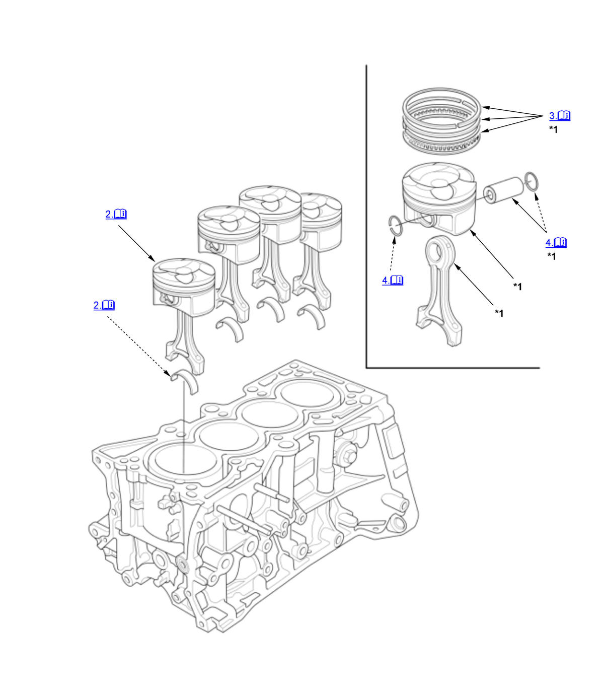

Piston, Ring, Pin, and Connecting Rod Removal and Installation (K20C1) (2017 2018 2019 2020 2021): Removal: Procedure
NOTE:
Numbered call-outs in figure pertain to list numbers in following procedure.
Fig 1: Exploded View Of Piston, Ring, Pin And Connecting Rod Components For Removal (K20C1 - 2017-21)

Courtesy of HONDA, U.S.A., INC. |
Detailed information, notes, and precautions |
| *1 | These parts have inspection items. |
- Crankshaft - Remove
- Piston/Connecting Rod Assembly - Remove
1. If you can feel a ridge of metal or hard carbon around the top of each cylinder, remove it with a ridge reamer (A). Follow the reamer manufacturer's instructions. If the ridge is not removed, it may damage the piston as it is pushed out. 2. Use the wooden handle of a hammer (A) to drive out the piston/connecting rod assembly (B). Take care not to damage the oil jets or cylinder with the connecting rod. 3. Reinstall the connecting rod bearings and caps after removing each piston/connecting rod assembly.
NOTE:
- Mark each piston/connecting rod assembly with its cylinder number to make sure they are reinstalled in the original order.
- The existing number on the connecting rod does not indicate its position in the engine, it indicates the rod bore size.
- Piston Ring - Remove
1. Using a ring expander (A), remove the old piston rings (B). 2. Clean all ring grooves thoroughly with a squared-off broken ring or a ring groove cleaner with a blade to fit the piston grooves. The top groove is 1.5 mm (0.059 in) wide. The second ring groove is 1.0 mm (0.039 in) wide. The oil ring groove is 2.0 mm (0.079 in) wide. File down a blade if necessary. Do not use a wire brush to clean the ring grooves, or cut the ring grooves deeper with the cleaning tools.
NOTE: If the piston is to be separated from the connecting rod, do not install new rings yet.
- Piston Pin - Remove
1. Apply new engine oil to the piston pin snap rings (A), and turn them in the ring grooves until the end gaps are lined up with the cutouts in the piston pin bores (B).
NOTE: Take care not to damage the ring grooves.2. Remove snap rings (A) from both sides of each piston. Start at the cutout in the piston pin bore. Remove the snap rings carefully so they do not go flying or get lost. Wear eye protection. 3. Heat the piston and connecting rod assembly to about 158°F (70°C). 4. Remove the piston pin.